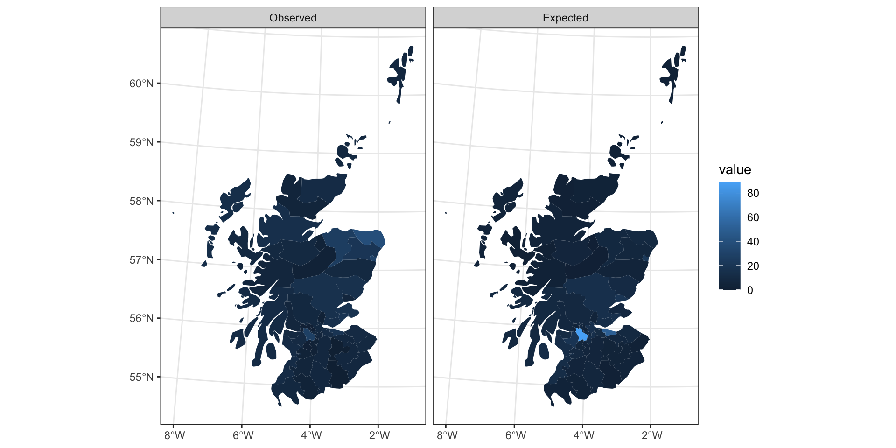
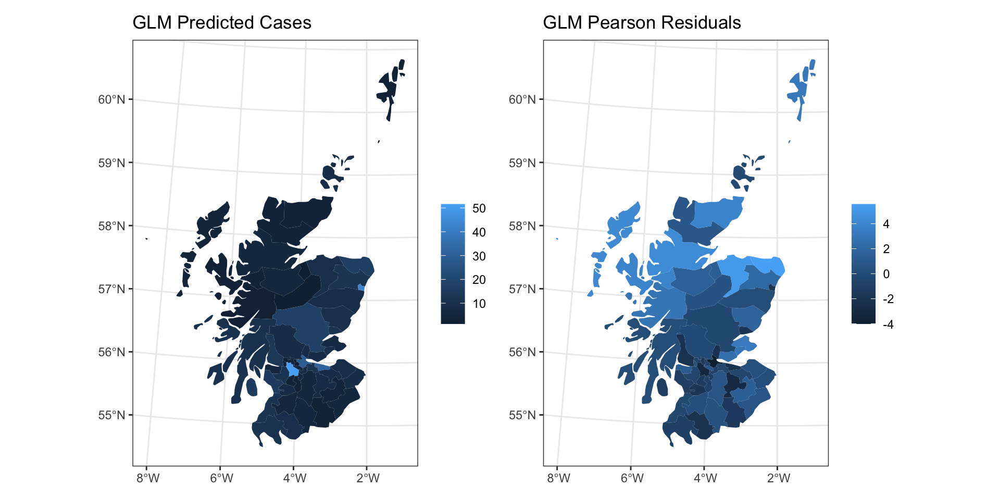
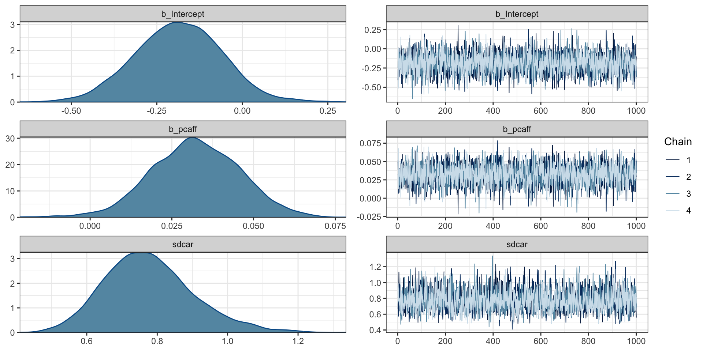
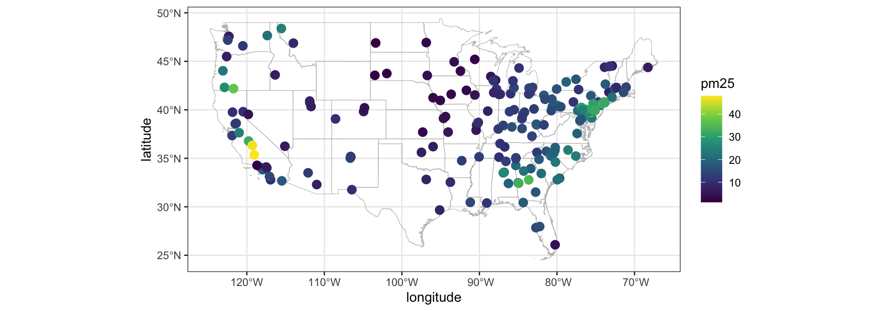
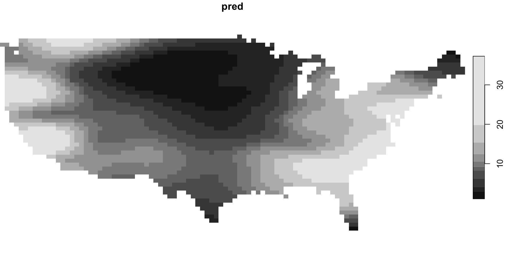
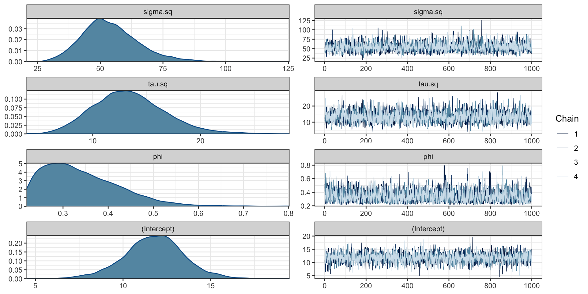
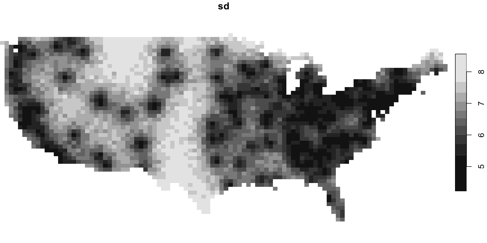

Fitting CAR and SAR Models
Lecture 20
Fitting areal models
Revised SAR Model
- Formula Model
\[ y(s_i) = X_{i\cdot}\beta + \phi \sum_{j=1}^n D^{-1}_{jj} \, A_{ij} \, \big(y(s_j) - X_{j\cdot}\beta\big) + \epsilon_i \] \[ \boldsymbol{\epsilon} \sim N(\boldsymbol{0},\, \sigma^2 \boldsymbol{D}^{-1}) \]
- Joint Model
\[ \boldsymbol{y} \sim N\left(\boldsymbol{X}\boldsymbol{\beta}, (\boldsymbol{I} - \phi \boldsymbol{D}^{-1} \boldsymbol{A})^{-1} \sigma^2 \boldsymbol{D}^{-1} \big((\boldsymbol{I} - \phi \boldsymbol{D}^{-1} \boldsymbol{A})^{-1}\big)^t \right) \]
Revised CAR Model
- Conditional Model
\[ y(s_i)|\boldsymbol{y}_{-s_i} \sim N\left(X_{i\cdot}\beta + \phi\sum_{j=1}^n \frac{A_{ij}}{D_{ii}} ~ \big(y(s_j)-X_{j\cdot}\beta\big),~ \sigma^2 D^{-1}_{ii} \right) \]
- Joint Model
\[\boldsymbol{y} \sim N(\boldsymbol{X}\boldsymbol{\beta},~\sigma^2(\boldsymbol{D}-\phi \boldsymbol{A})^{-1})\]
Example - NC SIDS
Using spdep + spatialreg
Characteristics of weights list object:
Neighbour list object:
Number of regions: 100
Number of nonzero links: 490
Percentage nonzero weights: 4.9
Average number of links: 4.9
Weights style: M
Weights constants summary:
n nn S0 S1 S2
M 100 10000 490 980 10696Plotting listw
Moran’s I
Moran I test under randomisation
data: 1000 * nc$SID74/nc$BIR74
weights: listW
Moran I statistic standard deviate = 3.6355,
p-value = 0.0001387
alternative hypothesis: greater
sample estimates:
Moran I statistic Expectation
0.210046454 -0.010101010
Variance
0.003666802 Geary’s C
Geary C test under randomisation
data: nc$SID74
weights: listW
Geary C statistic standard deviate =
0.91949, p-value = 0.1789
alternative hypothesis: Expectation greater than statistic
sample estimates:
Geary C statistic Expectation
0.88988684 1.00000000
Variance
0.01434105
Geary C test under randomisation
data: 1000 * nc$SID74/nc$BIR74
weights: listW
Geary C statistic standard deviate = 3.0989,
p-value = 0.0009711
alternative hypothesis: Expectation greater than statistic
sample estimates:
Geary C statistic Expectation
0.67796679 1.00000000
Variance
0.01079878 CAR Model
nc_car = spatialreg::spautolm(
formula = 1000*SID74/BIR74 ~ 1, data = nc,
listw = listW, family = "CAR"
)
summary(nc_car)
Call:
spatialreg::spautolm(formula = 1000 * SID74/BIR74 ~ 1, data = nc,
listw = listW, family = "CAR")
Residuals:
Min 1Q Median 3Q Max
-2.13872 -0.83535 -0.22355 0.55014 7.68640
Coefficients:
Estimate Std. Error z value Pr(>|z|)
(Intercept) 2.00203 0.24272 8.2484 2.22e-16
Lambda: 0.13062 LR test value: 8.6251 p-value: 0.0033157
Numerical Hessian standard error of lambda: 0.030475
Log likelihood: -182.3989
ML residual variance (sigma squared): 2.1205, (sigma: 1.4562)
Number of observations: 100
Number of parameters estimated: 3
AIC: 370.8SAR Model
nc_sar = spatialreg::spautolm(
formula = 1000*SID74/BIR74 ~ 1, data = nc,
listw = listW, family = "SAR"
)
summary(nc_sar)
Call:
spatialreg::spautolm(formula = 1000 * SID74/BIR74 ~ 1, data = nc,
listw = listW, family = "SAR")
Residuals:
Min 1Q Median 3Q Max
-2.09307 -0.87039 -0.20274 0.51156 7.62830
Coefficients:
Estimate Std. Error z value Pr(>|z|)
(Intercept) 2.01084 0.23622 8.5127 < 2.2e-16
Lambda: 0.079934 LR test value: 8.8911 p-value: 0.0028657
Numerical Hessian standard error of lambda: 0.024599
Log likelihood: -182.2659
ML residual variance (sigma squared): 2.1622, (sigma: 1.4704)
Number of observations: 100
Number of parameters estimated: 3
AIC: 370.53Predictions
Residuals

Residual distributions

Residual autocorrelation
Moran I test under randomisation
data: nc$car_resid
weights: listW
Moran I statistic standard deviate =
-1.7952, p-value = 0.07261
alternative hypothesis: two.sided
sample estimates:
Moran I statistic Expectation
-0.117449316 -0.010101010
Variance
0.003575538
Moran I test under randomisation
data: nc$sar_resid
weights: listW
Moran I statistic standard deviate =
0.17958, p-value = 0.8575
alternative hypothesis: two.sided
sample estimates:
Moran I statistic Expectation
0.0006769074 -0.0101010101
Variance
0.0036020941 Predicted vs Observed

What’s wrong?
Comparing CAR vs SAR.

Transforming the data
Freeman-Tukey’s transformation
This is the transformation used by Cressie and Road in Spatial Data Analysis of Regional Counts (1989).
\[ FT = \sqrt{1000} \left( \sqrt{\frac{SID74}{BIR74}} + \sqrt{\frac{SID74+1}{BIR74}} \right) \]

Other possibilities
FT transformation
sqrt transformation
log transformation

CAR Models
nc_car_ft = spatialreg::spautolm(formula = FT ~ 1, data = nc, listw = listW, family = "CAR")
nc_car_sqrt = spatialreg::spautolm(formula = sqrt ~ 1, data = nc, listw = listW, family = "CAR")
nc_car_log = spatialreg::spautolm(formula = log ~ 1, data = nc, listw = listW, family = "CAR")
AIC(nc_car_ft)[1] 192.1781[1] 100.8898[1] 134.644SAR Model
nc_sar_ft = spatialreg::spautolm(formula = FT ~ 1, data = nc, listw = listW, family = "SAR")
nc_sar_sqrt = spatialreg::spautolm(formula = sqrt ~ 1, data = nc, listw = listW, family = "SAR")
nc_sar_log = spatialreg::spautolm(formula = log ~ 1, data = nc, listw = listW, family = "SAR")
AIC(nc_sar_ft)[1] 191.9918[1] 102.717[1] 137.4095CAR predictions
SAR predictions

CAR residuals

SAR predictions
CAR residual distributions
SAR residual distributions

Residual spatial autocorrelation
Moran I test under randomisation
data: nc$car_sqrt_resid
weights: listW
Moran I statistic standard deviate =
-3.1196, p-value = 0.9991
alternative hypothesis: greater
sample estimates:
Moran I statistic Expectation
-0.200890550 -0.010101010
Variance
0.003740354
Moran I test under randomisation
data: nc$sar_sqrt_resid
weights: listW
Moran I statistic standard deviate = -0.422,
p-value = 0.6635
alternative hypothesis: greater
sample estimates:
Moran I statistic Expectation
-0.035976080 -0.010101010
Variance
0.003759585 CAR & SAR with brms
brms CAR
b_car = brms::brm(
1000*SID74/BIR74 ~ 1 + car(A), data=nc, data2=list(A=A),
adapt_delta = 0.95,
silent=2, refresh=0, iter=20000,
cores = 4, backend = "cmdstanr"
)Running MCMC with 4 parallel chains...
Chain 3 finished in 11.0 seconds.
Chain 2 finished in 11.7 seconds.
Chain 4 finished in 12.4 seconds.
Chain 1 finished in 12.7 seconds.
All 4 chains finished successfully.
Mean chain execution time: 12.0 seconds.
Total execution time: 12.8 seconds. Family: gaussian
Links: mu = identity; sigma = identity
Formula: 1000 * SID74/BIR74 ~ 1 + car(A)
Data: nc (Number of observations: 100)
Draws: 4 chains, each with iter = 20000; warmup = 10000; thin = 1;
total post-warmup draws = 40000
Correlation Structures:
Estimate Est.Error l-95% CI u-95% CI Rhat
car 0.74 0.16 0.35 0.97 1.00
sdcar 2.73 0.44 1.67 3.40 1.01
Bulk_ESS Tail_ESS
car 1159 2327
sdcar 492 1386
Population-Level Effects:
Estimate Est.Error l-95% CI u-95% CI
Intercept 2.09 0.32 1.45 2.73
Rhat Bulk_ESS Tail_ESS
Intercept 1.01 594 679
Family Specific Parameters:
Estimate Est.Error l-95% CI u-95% CI Rhat
sigma 0.50 0.32 0.07 1.21 1.05
Bulk_ESS Tail_ESS
sigma 87 18
Draws were sampled using sample(hmc). For each parameter, Bulk_ESS
and Tail_ESS are effective sample size measures, and Rhat is the potential
scale reduction factor on split chains (at convergence, Rhat = 1).Diagnostics
Predictions
Observed vs predicted
brms SAR
b_sar = brms::brm(
1000*SID74/BIR74 ~ 1 + sar(listW), data=nc, data2=list(listW=listW),
silent=2, refresh=0, iter=4000,
cores = 4, backend = "cmdstanr"
)Running MCMC with 4 parallel chains...
Chain 3 finished in 2.9 seconds.
Chain 4 finished in 2.8 seconds.
Chain 1 finished in 2.9 seconds.
Chain 2 finished in 2.8 seconds.
All 4 chains finished successfully.
Mean chain execution time: 2.9 seconds.
Total execution time: 3.2 seconds. Family: gaussian
Links: mu = identity; sigma = identity
Formula: 1000 * SID74/BIR74 ~ 1 + sar(listW)
Data: nc (Number of observations: 100)
Draws: 4 chains, each with iter = 4000; warmup = 2000; thin = 1;
total post-warmup draws = 8000
Correlation Structures:
Estimate Est.Error l-95% CI u-95% CI Rhat
lagsar 0.06 0.02 0.02 0.10 1.00
Bulk_ESS Tail_ESS
lagsar 3128 3877
Population-Level Effects:
Estimate Est.Error l-95% CI u-95% CI
Intercept 1.42 0.26 0.91 1.94
Rhat Bulk_ESS Tail_ESS
Intercept 1.00 2911 3789
Family Specific Parameters:
Estimate Est.Error l-95% CI u-95% CI Rhat
sigma 1.52 0.11 1.33 1.75 1.00
Bulk_ESS Tail_ESS
sigma 5052 4845
Draws were sampled using sample(hmc). For each parameter, Bulk_ESS
and Tail_ESS are effective sample size measures, and Rhat is the potential
scale reduction factor on split chains (at convergence, Rhat = 1).Diagnostics
Predictions
Observed vs predicted

Brief Aside - CAR & SAR precision matrices
\[ \Sigma_{SAR} = (\boldsymbol{I}-\phi \boldsymbol{D}^{-1} \, \boldsymbol{A})^{-1} \sigma^2 \, \boldsymbol{D}^{-1} \left((\boldsymbol{I}-\phi \boldsymbol{D}^{-1} \, \boldsymbol{A})^{-1}\right)^t \]
\[ \begin{aligned} \Sigma^{-1}_{SAR} &= \left( (\boldsymbol{I}-\phi \boldsymbol{D}^{-1} \, \boldsymbol{A})^{-1} \sigma^2 \, \boldsymbol{D}^{-1} \left((\boldsymbol{I}-\phi \boldsymbol{D}^{-1} \, \boldsymbol{A})^{-1}\right)^t \right)^{-1} \\ &= \left( \left( (\boldsymbol{I}-\phi \boldsymbol{D}^{-1} \, \boldsymbol{A})^{-1}\right)^t\right)^{-1} \frac{1}{\sigma^2} \, \boldsymbol{D} ~ (\boldsymbol{I}-\phi \boldsymbol{D}^{-1} \, \boldsymbol{A}) \\ &= \frac{1}{\sigma^2} \, (\boldsymbol{I}-\phi \boldsymbol{D}^{-1} \, \boldsymbol{A})^t ~ \boldsymbol{D} ~ (\boldsymbol{I}-\phi \boldsymbol{D}^{-1} \, \boldsymbol{A}) \\ \end{aligned} \]
\[ \Sigma^{-1}_{CAR} = \frac{1}{\sigma^2} \, (\boldsymbol{D}- \phi \boldsymbol{A}) \]
Sta 344 - Fall 2022